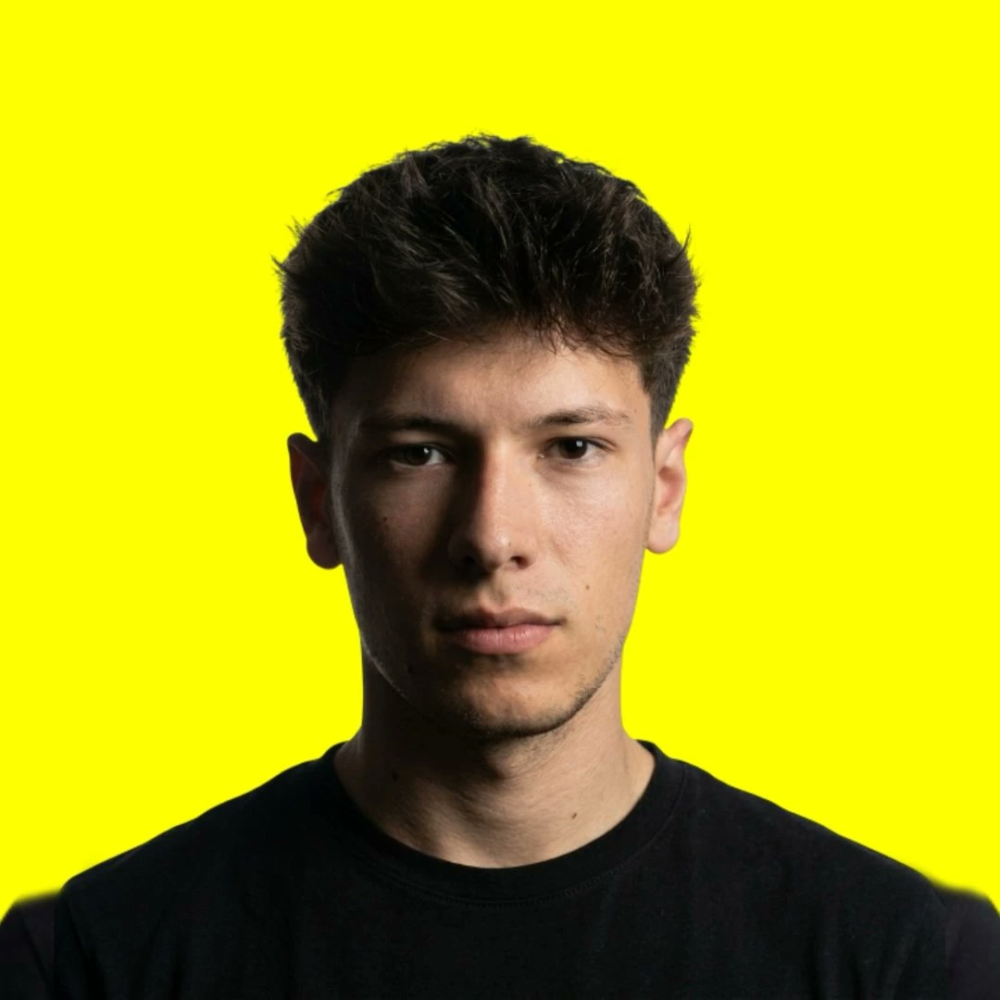

@marcelgrauu81 effects. Type one slash command in Claude Code and it builds the effect on your clip.
A zip with plain folders. Nothing to run on its own: Claude Code reads them.
Each one is a Claude Code skill: the steps Claude follows to build that effect on your clip, plus a direct prompt you can paste if you prefer.
The shared engine every command uses: a Remotion project with all the effects, the motion kit and the script that cuts you out of the background. You need it once.
How to install it and the list of every command.
Tap one to see what you need and copy its prompt.
Once. Then every command just works.
Claude Code, Node 18 or newer, Python 3 and ffmpeg.
Unzip it and copy every folder inside, commands-base included, into ~/.claude/skills/
Open Claude Code in the folder with your clip and type /orbit use my clip video.mp4
Vertical, locked camera, room around your head. Each command tells you the shot it likes.